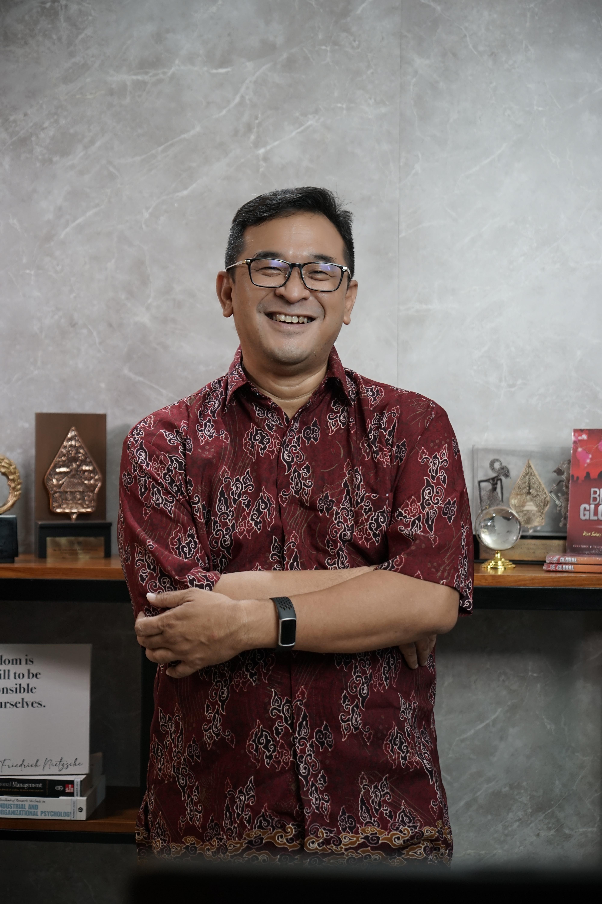
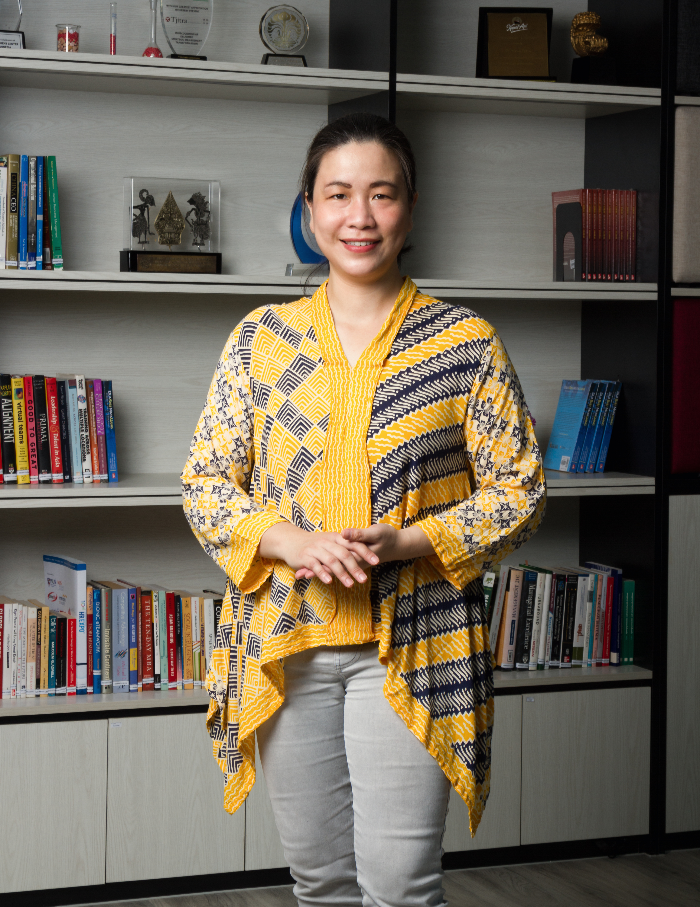

You already use AI. Now use it on purpose. Two days to build a workable method you can name and rely on.
You've opened AI, typed a question, gotten a decent answer, moved on. Maybe a few times a week. But you can't explain how you get good results — and you can't reliably repeat them. That's not a skill. That's luck.
"The tools were never the problem.
What's been missing is a way of working."You're not doing it wrong. You just don't have a system yet.
Good results happen sometimes. But you can't explain how — and you can't repeat them when it counts.
You rephrase the same prompt three times hoping for better output. It works eventually. That's not working with AI — that's negotiating with it.
AI produces text. It doesn't carry your voice, your standards, or your context.
Before
You know AI can help. You try things. Some work, most are average. You can't explain what you did differently on the good days.
After two days
You have a method you can name, repeat, and teach. It works on any tool. You're the one on the team who actually knows how to work with AI — not just use it.
Each module is a distinct skill that builds on the one before. You leave Day 2 with a system that runs on Monday — not a notebook full of ideas.
Day 1 · Foundation
Where AI creates real value in professional work — and where it does not. No hype, no fear. A clear starting point.
The core framework. Give AI a role, context, and precise task — before the question. The difference in output quality is immediate.
Anchor AI to your own documents and data using NotebookLM — so it works from what you know, not what it guesses.
Take one real workflow from your own work. Map it with AI. Leave with something redesigned — not an idea to figure out later.
Day 2 · Application
A personal system — PARA and Second Brain — where AI handles capture and retrieval so you can focus on the thinking.
Reports, proposals, and communications in your voice — your standard, not AI's default. Faster and sharper.
Visuals and presentations from your own documents — produced in the same session where you think the idea through.
Memory and custom instructions — configure AI to already know who you are, what you do, and how you think. No more briefing it from scratch.
Take Home
Move from trial-and-error to ACT→ACTIONS — a method for precise, repeatable prompts you can explain to anyone.
Use AI as a thinking partner to synthesize and analyse. More done — without going shallow.
Refine AI output until it meets your standard — not just your deadline. Work you're confident putting your name on.
Entry Signal
You use AI already — or want to start — and the output still does not feel like yours. You want a method that works across different tasks, not just one trick. No prior AI experience required.
Not right for you: You want prompt templates to copy and paste. Those are free online. This programme builds the skill to write your own — for any situation.
You've used AI. Some results were good, most were average. You want the good results to be repeatable — not accidental.
You're expected to know. This gives you something solid to stand on — not a list of tools you've downloaded.
You've done AI training before. This is where it actually sticks — because the work is yours, not someone else's case study.

HTDr. Hora Tjitra
Managing Partner, Tjitra & Associates
Professor at Zhejiang University (2004–2013). Senior Consultant at PwC. Senior Advisor for Pertamina's EFMD Gold Award-winning programme (2020). EFMD Gold Award recipient.

KAKristina Aryanti
CEO, IWDemy · Programme Director, AI First
CEO, IWDemy. Programme Director, AI First. Organisational Psychologist.
15 seats · SOHO Podomoro City, Jakarta